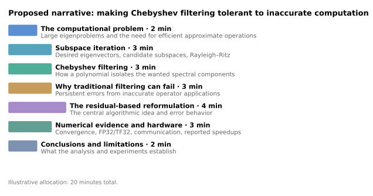

flowchart LR
subgraph traditional["Traditional ChFSI"]
direction TB
A1["Filter eigenvector estimates directly"]
A2["Approximate operator introduces errors"]
A3["Errors can persist and cause stagnation"]
A1 --> A2 --> A3
end
subgraph residual["Residual-based R-ChFSI"]
direction TB
B1["Construct the filter recurrence using residuals"]
B2["Residuals shrink as convergence improves"]
B3["Approximation errors can shrink with them"]
B1 --> B2 --> B3
end
classDef plain fill:transparent,stroke:transparent,color:#333;
class A1,A2,A3,B1,B2,B3 plain;
style traditional fill:transparent,stroke:#aaa,stroke-width:1px
style residual fill:transparent,stroke:#aaa,stroke-width:1px
1 Plan
The paper Residual-based Chebyshev filtered subspace iteration investigates how to compute a selected set of eigenvalues and eigenvectors of very large matrices efficiently.
The starting point is the generalized Hermitian eigenvalue problem
\[ Ax = \lambda B x \]
where \(A\) and \(B\) are Hermitian, and \(B\) is positive definite. The standard eigenproblem \(Ax=\lambda x\) is the special case \(B=I\).
Its objective is to compute the eigenvectors corresponding to a relatively small number of the lowest eigenvalues.
For very large sparse matrices, computing every eigenvector would be unnecessarily expensive.
The authors investigate a method called Chebyshev-filtered subspace iteration (ChFSI).
The key idea is to construct a subspace that increasingly concentrates on the desired eigenvectors. Chebyshev polynomials provide an efficient way of separating the wanted and unwanted spectral components.
The problem is that ChFSI can lose convergence accuracy when the matrix-vector products used during filtering are approximate.
Such approximations are attractive because they can make the computation cheaper—for example, through low-precision arithmetic or inexpensive approximations of \(B^{-1}\).
The paper proposes a reformulation called R-ChFSI, which computes the polynomial recurrence in terms of residuals rather than directly filtering eigenvector estimates.
The essential numerical idea is that the relevant residuals become smaller as the eigenvector estimates improve. This allows the errors introduced by approximate operations to decrease during convergence rather than persisting at approximately the same magnitude.
The authors establish theoretical error bounds and investigate the resulting method on both controlled matrices and large-scale electronic-structure problems.
1.1 Necessary Mathematical Background
Level 1. Eigenvalues and Hermitian Matrices
Eigenvalues, eigenvectors, the spectral theorem, orthogonality, positive-definite matrices, and generalized eigenvalue problems.
Why do Hermitian matrices have an orthonormal basis of eigenvectors and why does that permit spectral filtering?
Level 2. Numerical eigenvalue algorithms
Power iteration, inverse iteration, subspace iteration, Rayleigh quotients, Rayleigh-Ritz projection, Ritz values nad Ritz vectors.
Why an algorithm works with an evolving subspace instead of computing the entire eigendecomposition?
Level 3. Chebyshev polynomial filtering
Polynomial recurrences, spectral transformations, polynomial filtering, spectral gaps and convergence of invariant subspaces
Why does applying a carefully chosen polynomial to a matrix amplifies its desired eigenspace relative to the unwanted one?
Level 4. Numerical inexactness and the residual-based formulation
Eigenpair residuals, perturbations of matrix-vector products, error propagation, convergence stagnation and the new recurrence
Moving from the established backgrouind to the authors’ research
Level 5. Advanced analysis and application background
Principles angles between subspaces, detailed convergence proofs, density functional theory, finite-element overlap matrices, GPU implementationi and distributed sparse matrix operations.
1.2 Concrete Mathematical Path
Start with a very simple eigenvalue problem.
For a matrix \(A\), an approximate eigenpair \((\widetilde\lambda,\widetilde x)\) has residual \[ r=A\widetilde x-\widetilde\lambda\widetilde x. \]
For the generalized problem, the residual is \[ r=A\widetilde x-\widetilde\lambda B\widetilde x. \]
An exact eigenpair has zero residual.
This gives us a natural way to assess the quality of an approximate eigenpair.
Now suppose you want to find several eigenvectors simultaneously. Rather than working with just one vector, you work with a matrix \(X\) whose columns span a candidate subspace.
That leads to subspace iteration.
The next important idea is that for a Hermitian matrix with eigendecomposition \[ A=Q\Lambda Q^*, \]
applying a polynomial to the matrix gives \[ p(A)=Qp(\Lambda)Q^*. \]
In other words, the polynomial acts on the eigenvalues while preserving the eigenvectors.
This is the mathematical foundation of polynomial spectral filtering.
Chebyshev polynomials are useful because they can strongly amplify selected spectral components relative to others, using an inexpensive recurrence.
Only after understanding these ideas would I investigate the authors’ residual-based reformulation.
Their analysis provides an error bound whose essential structure is \[ \|\Delta_k^{(i)}\| \leq C_k\|R^{(i)}\|, \]
where \(R^{(i)}\) represents the current eigenpair residual and \(C_k\) summarizes factors involving approximation quality and filter parameters.
Compare that with an error bound for traditional filtering that does not necessarily shrink with the current residual.
1.3 A Possible 20-minute presentation

A potential difficulty: you have only about six minutes to establish subspace iteration and Chebyshev filtering before discussing the new algorithm.
The paper’s Figures 1 and 2, on pages 13–14, would be particularly useful evidence: they compare convergence of traditional ChFSI and R-ChFSI with different amounts of approximation error.
In the controlled tests, traditional filtering stagnates while the residual-based version continues toward much smaller residuals. The paper subsequently tests the method on large DFT eigenproblems and reports filtering speedups up to 2.7× and full eigensolver speedups up to 2.1× in its benchmark configurations.
1.4 A possible 10-page report
| Section | Approx. length | Subject |
|---|---|---|
| 1. Introduction and motivation | 1 page | Large eigenproblems and motivation for approximate computation |
| 2. Mathematical preliminaries | 1.5 pages | Generalized Hermitian eigenproblems, residuals, subspaces and Ritz approximation |
| 3. Conventional ChFSI | 1.5 pages | Polynomial filtering and iterative eigenspace approximation |
| 4. Limitations under inexact operations | 1 page | Error propagation and convergence stagnation |
| 5. Residual-based R-ChFSI | 2 pages | New recurrence, error dependence and convergence results |
| 6. Numerical experiments and hardware efficiency | 2 pages | Controlled experiments, DFT problems and low-precision performance |
| 7. Critical discussion and conclusion | 1 page | Assumptions, limitations and significance |
1.5 Preparation Roadmap
I would approach the unfamiliar mathematics incrementally, not try to read the entire paper and every unfamiliar reference at once.
Eigenvalue fundamentals — approximately 1 week.
Review Hermitian matrices, spectral decomposition, Rayleigh quotients, eigenpair residuals and generalized eigenvalue problems. Work through small matrix examples.
Numerical eigenvalue methods — approximately 1–2 weeks.
Learn power iteration, subspace iteration and Rayleigh–Ritz projection. Implement a small subspace iteration in Python or C++ and compare against a library eigensolver.
Chebyshev filtering — approximately 1 week.
Study Chebyshev polynomials, spectral mapping and polynomial filters. Experiment with filtering vectors in a small diagonal or symmetric matrix problem.
Read the central theory — approximately 1–2 weeks.
Work through Sections 2 and 3 of the paper. Understand the original recurrence, the proposed residual-based recurrence, and the role of approximation errors in the convergence analysis.
Study the experiments — approximately 1 week.
Examine how the authors construct controlled perturbations, interpret the convergence figures, and relate FP32/TF32 computation and BF16 communication to hardware performance.
Synthesis and presentation preparation.
Develop the report, select a manageable amount of mathematical detail, and build an explanation that is understandable without requiring the audience to know numerical eigenvalue theory in advance.
1.6 Schedule
| Period | Tasks |
|---|---|
| Oct 23 – Nov 1 | Eigenvalue fundamentals, introductory subspace iteration, assess mathematical feasibility |
| Nov 2–15 | Rayleigh–Ritz and Chebyshev polynomial filtering |
| Nov 16–29 | Read Sections 2–3, work through residual recurrence and principal error bounds |
| Nov 30 – Dec 13 | Analyze numerical experiments, hardware aspects and limitations |
| Dec 14–27 | Write and revise report; establish presentation narrative |
| Dec 28 – Jan 10 | Develop algorithm diagrams, mathematical explanations and slides |
| Jan 11–18 | Rehearse, simplify technical sections, prepare for questions |
| Jan 19 | Presentation |
1.7 Understanding checklist
- Explain the generalized eigenvalue problem \(Ax = \lambda B x\) and the meaning of the eigenpair residual
- Describe why subspace iteration is useful when only a few eigenpairs are wanted
- Understand how a polynomial \(p(A)\) changes the relative sizes of spectral components
- Explain the purpose of Chebyshev filtering at a conceptual level
- Explain why filtering residuals might permit more accurate solutions approximate operator applications
1.8 Independent Computational Investigation
Implement ordinary subspace iteration and plynomial filtering for a manageable symmetric matrix, introduce controlled perturbations into matrix-vector products, and observe the convergence behavior.
A full R-ChFSI is a considerably larger undertaking.